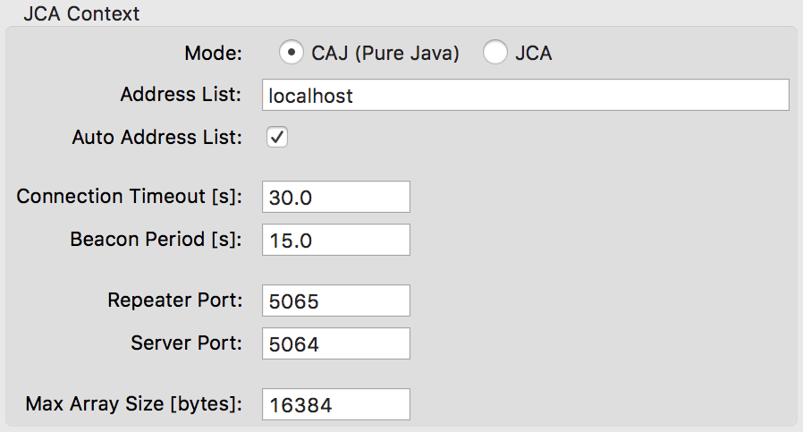

The Channel Access page shows the preferences used to access the Process Variables on EPICS IOCs via the network.
The core parameter for the EPICS Channel Access are configured through the JCA Context section. This includes what implementation of JCA is used (JCA/JNI or CAJ/Pure Java) and the configuration parameters for those implementations.
By default, CAJ is used with the default CAJ configuration. CAJ should, by default, honor the standard EPICS environment variables to configure the client. One can still override that configuration by specifying the configuration properties here. Please, refer to the JCA/CAJ instructions for details on these properties.
We recommend to use the CAJ (pure java) implementation, as the JCA (JNI) implementation currently lacks an official maintainer. Moreover, to use the JNI version, the operating system specific binaries for JNI must be installed.
The preferences in the JCA Context section are listed below.

| Mode | Allows to chose between the CAJ/Pure Java implementation of the JCA library, or the native JNI one, where the operating system specific binaries for JNI must be installed. | |
|---|---|---|
| Address List |
A space-separated list of broadcast address for process
variable name resolution. Each address must be of the form:
[ip-number]:[port]or [host-name]:[port] |
|
| Auto Address List | Define whether or not the network interfaces should be discovered at runtime. | |
| Connection Timeout [s] | If the context doesn't see a beacon from a server that it is connected to for Connection Timeout seconds then a state-of-health message is sent to the server over TCP/IP. If this state-of-health message isn't promptly replied to then the context will assume that the server is no longer present on the network and disconnect. | |
| Beacon Period [s] | Period in second between two beacon signals. | |
| Repeater Port | Port number for the repeater to listen to. | |
| Server Port | Port number for the server to listen to. | |
| Max Array Size [bytes] | Length in bytes of the maximum array size that may pass through Channel Access. |
The data source itself is configurable through the following parameters:
| Monitor Mask |
Allows to change what is the mask used for the CA monitor.
The possible values are:
|
|
|---|---|---|
| Variable Length Array | Whether variable length arrays are supported by the client. Possible values are Auto Detect, Enabled or Disabled. Auto Detect tries to detect the version of the client and act accordingly. Auto detection may not work on JNI implementation. | |
| DBE_PROPERTY Supported | Whether to subscribe to DBE_PROPERTY to monitor metadata changes. | |
| Honor Zero Precision | Whether zero precision on numeric metadata should be used or disregarded. This may be useful if too many IOCs are not configured properly. | |
| Value Only RTYP Monitor | Whether .RTYP should be monitored as value only or not. This is a workaround for old IOCs. |